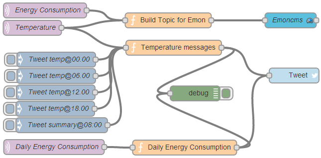

Hi.
I have created a Emoncms node for Node-RED. It is a great way to fetch and manipulate data before you post it to Emoncms.
You can find more info about Node-RED at nodered.org and the emoncms node can be downloaded at https://github.com/henols/node-red-nodes.
Please test it out!
Best regards
Henrik

**Edited by Mod - Paul
Re: Node-RED and Emoncms
Henrik,
Looks good I too am a convert to Node-RED.
It's probaby worth expanding on what the nodes in the picture do,
Which I think is to take
The MQTT topics for Energy Consumption(in pink) run them through a function (orange) to Format/Calculate stuff and then pass that to a node that sends it to the EmonCMS node (in Cyan).
The MQTT temperature topic goes to a function that gets triggered at certain time (blue inject nodes) run them through a function (orange) to Format/Calculate stuff and then pass that to a node that sends tweets(light blue).
There are other nodes that can read from a serial port (e.g RFM12Pi on a RaspberryPi) and send that to a function etc etc...
Re: Node-RED and Emoncms
Definitely an exciting idea. I'll have to get an RFM interfaced with my RPi now. Once I get there, will give it a try and let you know how it goes.
Re: Node-RED and Emoncms
I'm also going to give it a try later this week following my weekly backup.
Whilst searching for info about node-red, I found these two links which I intend to follow;
Adafruit node-red installation blog
Weather predictions with node-red
Paul
Re: Node-RED and Emoncms
Paul, just a word of caution about following the Adafruit instructions for installing NodeRED if you are installing on a RaspberryPi,it will install the latest version of node.js.
There have been memory leakage issues seen with this version ,which causes NodeRED to crash after a day or two.
The installation instructions on the NodeRED site therefore install an earlier version of node..js.
Re: Node-RED and Emoncms
Thanks, I'll stick to v0.8.22 as per the Node-Red site.
Have you found that Node-Red co-exists OK with other software installed on the same RasPi, such as emoncms and media servers?
I keep adding different functions to my RasPi, and for £20 it's shouldering a lot of responsibility!!
Paul
Re: Node-RED and Emoncms
I've not attempted to run emoncms on the same pi. I have one pi set up using nodered and a PiLite from ciseco as a display, this subscribes to numerous different MQTT topics (caller ID, weather, realtime local buses etc ) from mosquito and nodered on my main pi which has a Rfm12pi feeding emoncms.org.
Nodered also now tweets alerts if power goes above a value for more than a minute, and it's also running some private twitterbots to allow me to interrogate what's happening at home as well.
Re: Node-RED and Emoncms
Caller ID?
Re: Node-RED and Emoncms
Getting a bit off topic so I'll send you a PM
Re: Node-RED and Emoncms
The emoncms node works well, thank you.
How are you fetching data from your emoncms sensors into node-red? It appears that you are using a mqtt broker, but unsure of the settings/port number necessary in the mqtt config.
I'm using a Raspberry Pi with a rfm2pi module attached, with inputs being sent via RFM12B modules.
Paul
Re: Node-RED and Emoncms
You'll need to install a broker ;-)
I followed the install instructions here
http://mosquitto.org/2013/01/mosquitto-debian-repository/
Re: Node-RED and Emoncms
It seems that the hole that I am digging is getting deeper!
Paul
Re: Node-RED and Emoncms
You shouldn't need to use MQTT if you don't want to (I've not actually tested this) .
But it potentially allows some more flexibility of you then decide to do more with the data at a later date.
(e.g. I have plans for a red LED light to be displayed if values get above a certain value, which I could do by subscribing to the MQTT topic.)
Here's my Node-red flow... To go from RFM12Pi
based significantly Don Bramey's blog post on https://www.ibm.com/developerworks/community/blogs/B-Fool/entry/home_automation_with_node_red_jeenodes_and_the_oen_energy_monitor_project?lang=en
You can copy this and paste it into Node-red using the Import from... Clipboard.. options
[{"id":"ba386057.845d3","type":"mqtt-broker","broker":"localhost","port":"1883"},{"id":"78ed6566.87129c","type":"serial-port","serialport":"/dev/ttyAMA0","serialbaud":"9600","newline":"\\r\\n","addchar":"false"},{"id":"e821e0cb.17de2","type":"function","name":"Parse RF12B ","func":"// console.log(msg.topic, msg.payload, msg.qos, msg.retain);\n// context = {};\n\n//we are expecting data in form \"G nodeid data1 data2 etc\"\nvar tokens = msg.payload.split(\" \"); \nvar outString = null;\nvar outTopic;\nif (tokens.shift() == \"G\")\n{ var networkid = tokens.shift() & 0x1F;\n var nodeid = tokens.shift() & 0x1F;\n outString = tokens;\n outTopic = 'rfm12b/' + nodeid;\n}\nelse\n{\nreturn null;\n}\n\nvar msg2 = { payload:outString, topic:outTopic};\nreturn msg2;","outputs":"1","x":270,"y":69,"z":"e919e8b.f16e618","wires":[["cf906c71.306f9","718bdf34.8e742"]]},{"id":"7e156ced.81ea94","type":"serial in","name":"RFM12Pi","serial":"78ed6566.87129c","x":83,"y":67,"z":"e919e8b.f16e618","wires":[["e821e0cb.17de2"]]},{"id":"cf906c71.306f9","type":"mqtt out","name":"Publish RFM12B","topic":"","broker":"ba386057.845d3","x":491,"y":91,"z":"e919e8b.f16e618","wires":[]},{"id":"718bdf34.8e742","type":"debug","name":"","active":true,"complete":"false","x":466,"y":39,"z":"e919e8b.f16e618","wires":[]}]
Re: Node-RED and Emoncms
Thanks for that. I've installed Mosquitto, and also tried your JSON file, which does show the input data from my emonTX's in the debug pane, but it causes major problems with emoncms.
When I look at data from /dev/ttyAMA0 at 9600baud via the node-red serial node, it somehow interferes with the way emoncms handles the data, and stops most of my emoncms inputs/feeds from being updated - despite the data still registering OK in the node-red debug pane.
The only way to restore the inputs/feeds being updated normally is to delete the serial node and reboot the RaspPi.
Paul.
Re: Node-RED and Emoncms
A reply from Nick O'Llearry (Github) explains the issue;
----------------------------------
Hi Paul,
I'm not overly familiar with emoncms, but this sounds like it is using the serial port itself outside of node-red.
You cannot have two processes accessing a serial port at the same time. If emoncms is running, collecting data from the the serial port, when you add a node for the same port in node-red, it will kick emoncms off.
This is not a fault of the node-red serial port.
You have to pick one process to access the serial port and find some way to share the data with the other.
Re: Node-RED and Emoncms
I can't see that it will be the core emoncms itself that is accessing the serial port as otherwise it would run into the same problems with the RaspberryPi module?
Have you uninstalled the RaspberryPi module? As this would grab the serial port and stop anything else getting it.
Sorry didn't think of this before!
Ukmoose
Re: Node-RED and Emoncms
Thanks Mark. I only need access to a few inputs, so on balance I would prefer to use emoncms as the main process, and seek a different way to integrate some of the data into node-red .
It's unfortunate that emoncms does not communicate MQTT (yet!).
My plan B is to forward the inputs via the 'Event Module' using cURL to node-red, but I'm still building familiarity with node-red so it may take a while....
Paul
Re: Node-RED and Emoncms
Hello Paul,
It's an old topic..I know.. but I got a question, I just installed node-red on my second PI and I love it right away, Imade some simple flow from emoncms to pushbullet and twitter.
Now I want to combine those mqtt message into one input (json?) node for emoncms.
Do you got some hints, tips or examples that you want to share with me?
Thanks!